為了紀念期間限定「Fate/EXTRA CCC×Fate/Grand Order」特別活動的舉辦，舉辦開幕前宣傳活動！
◆舉辦期間◆
2017年4月19日(三) 16:00～4月30日(日) 22:59
為了期間限定「Fate/EXTRA CCC×Fate/Grand Order」特別活動的舉辦，在Fate/EXTRA CCC活躍的Servant「尼祿・克勞狄烏斯〔Bride〕」的戰鬥動作及寶具演出翻新！
◆翻新時間◆
2017年4月19日(三) 16:00～
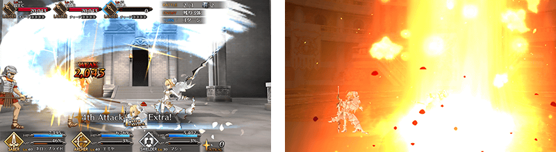
配合戰鬥動作及寶具演出的翻新，開放尼祿・克勞狄烏斯〔Bride〕的幕間物語！
◆開放時間◆
2017年4月19日(三) 16:00～
◆關卡開放條件◆
尼祿・克勞狄烏斯〔Bride〕的絆Lv.4以上、強化到再臨第二階段、通過幕間物語第一節的話開放關卡。
◆關卡通過報酬◆
尼祿・克勞狄烏斯〔Bride〕的寶具強化

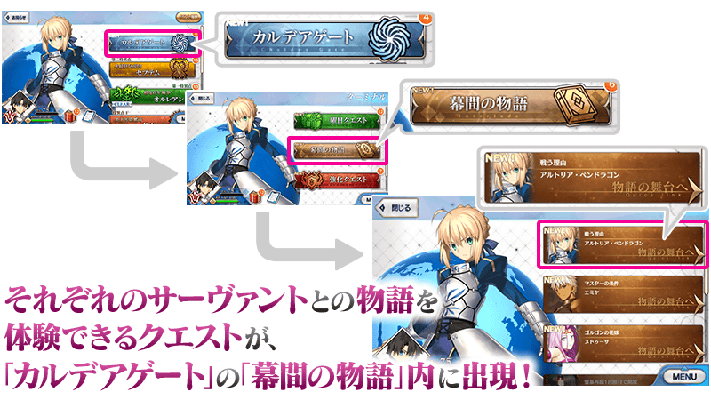
※達成開放條件的話會在迦勒底之門內的「幕間物語」出現關卡看板。
為了紀念期間限定「Fate/EXTRA CCC×Fate/Grand Order」特別活動的舉辦，新魔術禮裝「月の裏側の記憶」登場！
獲得魔術禮裝的關卡會在迦勒底之門以期間限定出現！
裝備新獲得魔術禮裝的話，可以使用新Master技能。
◆舉辦期間◆
2017年4月19日(三) 16:00～4月30日(日) 22:595月24日(三) 15:59
※延長舉辦期間。
◆關卡開放條件◆
通過「終局特異點」後開放。
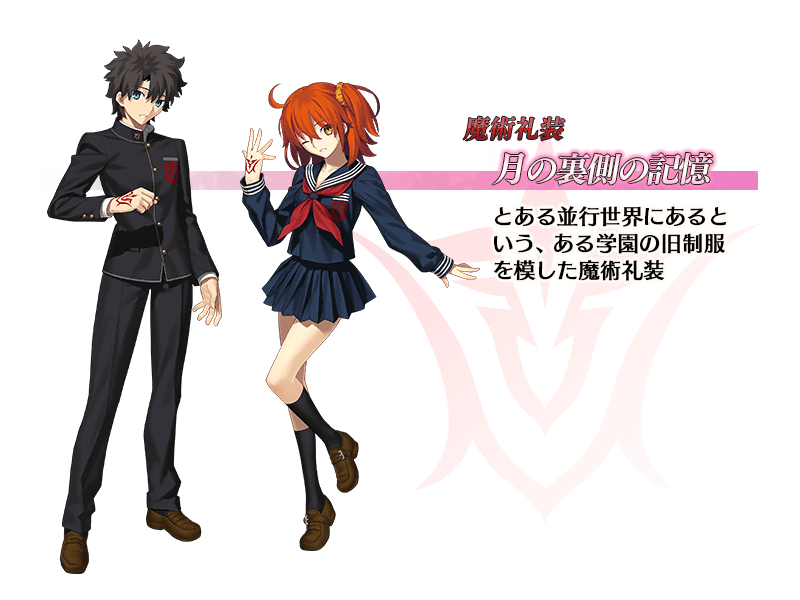

為了紀念期間限定「Fate/EXTRA CCC×Fate/Grand Order」特別活動的舉辦，MyRoom以期間限定變更為特別配置！
◆舉辦期間◆
2017年4月19日(三) 16:00～4月30日(日) 22:595月24日(三) 15:59
※延長舉辦期間。
與Fate/EXTRA 系列關聯的一部份Servant幕間物語的AP消費量，以期間限定變成1/2。
◆舉辦期間◆
2017年4月19日(三) 16:00～4月30日(日) 22:59
◆對象Servant◆
| Servant | 開放條件 | |
|---|---|---|
| 尼祿・克勞狄烏斯 | 第一節 | ・通過第二特異點 ・強化到再臨第一階段 ・絆Lv.2 |
| 第二節 | ・通過尼祿・克勞狄烏斯的幕間物語第一節 ・強化到再臨第二階段 |
|
| 第三節 | ・通過尼祿・克勞狄烏斯的幕間物語第二節 ・通過第四特異點 ・強化到再臨第三階段 ・絆Lv.5 |
|
| 尼祿・克勞狄烏斯〔Bride〕 | 第一節 | ・通過第四特異點 ・強化到再臨第一階段 ・絆Lv.2 |
| 第二節 | ・通過尼祿・克勞狄烏斯〔Bride〕的幕間物語第一節 ・強化到再臨第二階段 ・絆Lv.4 |
|
| Emiya(Archer) | 第一節 | ・通過特異點F ・強化到再臨第一階段 ・絆Lv.2 |
| 第二節 | ・通過Emiya(Archer)的幕間物語第一節 ・強化到再臨第二階段 ・絆Lv.4 |
|
| 吉爾伽美什(Archer) | 第一節 | ・通過特異點F ・強化到再臨第一階段 ・絆Lv.1 |
| 第二節 | ・通過吉爾伽美什(Archer)的幕間物語第一節 ・通過第四特異點 ・強化到再臨第二階段 ・絆Lv.3 |
|
| 第三節 | ・通過吉爾伽美什(Archer)的幕間物語第二節 ・通過第五特異點 ・強化到再臨第三階段 ・絆Lv.5 |
|
| 羅賓漢 | 第一節 | ・通過特異點F ・強化到再臨第一階段 ・絆Lv.3 |
| 伊莉莎白・巴托里(Lancer） | 第一節 | ・通過第二特異點 ・強化到再臨第一階段 ・絆Lv.1 |
| 迦爾納 | 第一節 | ・通過第三特異點 ・強化到再臨第一階段 ・絆Lv.2 |
| 庫・夫林(Lancer） | 第一節 | ・通過第二特異點 ・強化到再臨第一階段 ・絆Lv.1 |
| 弗朗西斯・德雷克 | 第一節 | ・通過第三特異點 ・強化到再臨第一階段 ・絆Lv.1 |
| 玉藻前(Caster） | 第一節 | ・通過第二特異點 ・強化到再臨第一階段 ・絆Lv.2 |
| 第二節 | ・通過玉藻前(Caster）的幕間物語第一節 ・通過第四特異點 ・絆Lv.3 |
|
| 童謠 | 第一節 | ・通過第四特異點 ・強化到再臨第三階段 ・絆Lv.4 |
| 漢斯・克里斯蒂安・安徒生 | 第一節 | ・通過第四特異點 ・強化到再臨第二階段 ・絆Lv.3 |
| 玉藻貓 | 第一節 | ・通過第三特異點 ・強化到再臨第一階段 ・絆Lv.3 |
| 第二節 | ・通過玉藻貓的幕間物語第一節 ・通過第四特異點 ・強化到再臨第二階段 ・絆Lv.3 |
|
| 呂布奉先 | 第一節 | ・通過第二特異點 ・強化到再臨第一階段 ・絆Lv.1 |
※4/19(三)追記
※透過主線關卡的進行，會有迦勒底之門內的「幕間物語」出現關卡看板的情況。
※達成各Servant「幕間物語」的開放條件後，在迦勒底之門內的「幕間物語」會出現關卡看板。
與Fate/EXTRA 系列關聯的一部份Servant強化關卡的AP消費量，以期間限定變成1/2。
◆舉辦期間◆
2017年4月19日(三) 16:00～4月30日(日) 22:59
◆對象Servant◆
| 職階 | Servant |
|---|---|
| Archer | Emiya、羅賓漢 |
| Lancer | 伊莉莎白・巴托里 |
| Berserker | 呂布奉先 |
期間限定活動「Fate/EXTRA CCC×Fate/Grand Order特別活動」是只有通過「終局特異點」的Master才能参加的活動。
因此，以直到「終局特異點」為止的主線關卡為對象，舉辦主線關卡AP消費1/2宣傳活動。
無論如何藉此機會推進主線關卡，參加活動吧！
◆舉辦期間◆
2017年4月19日(三) 16:00～4月30日(日) 22:595月24日(三) 15:59
※延長舉辦期間。
◆對象關卡◆
直到終局特異點為止的全部主線關卡
※自由關卡及、與 Fate/EXTRA 系列關聯的一部份Servant以外的Servant強化關卡、幕間物語為對象外。
|
自2017年4月26日(三) 18:15官方Twitter中，同時播送「Fate/Grand Order 迦勒底放送局SP Fate/EXTRA CCC特別活動舉辦記念放送」。 |
◆節目標題◆
「Fate/Grand Order 迦勒底放送局SP Fate/EXTRA CCC特別活動舉辦記念放送」
【4月18日(二) 14:00追記】
節目頁面
http://live.nicovideo.jp/watch/lv295480884
Youtube 節目頁面
https://www.youtube.com/watch?v=GTutEIC9NyI
◆放送時間◆
2017年4月26日(三) 19:30～(預定約1小時)
■事前節目 19:15～
FGO寶具動畫展示
■本篇節目 20:30～
「Fate/EXTRA CCC」特別活動最新情報 另外
◆出演者◆
小倉唯(聲優)
下屋則子(聲優)
島﨑信長(聲優)
マフィア梶田(主持、自由作家)
◆「Fate/EXTRA CCC特別活動開幕前Pick Up召喚」期間◆
期間：2017年4月19日(三) 16:00～5月3日(三) 13:59
以期間限定舉辦「Fate/EXTRA CCC特別活動開幕前Pick Up召喚」舉辦！
從在Fate/EXTRA 系列登場的Servant之中，期間限定Servant「★5(SSR)尼祿・克勞狄烏斯〔Bride〕」與「★5(SSR)吉爾伽美什(Archer)」登場！
這次是包含上述，對象4位的Servant以每日交替Pick Up！
對象的★5(SSR)Servant「★5(SSR)尼祿・克勞狄烏斯〔Bride〕」「★5(SSR)吉爾伽美什(Archer)」「★5(SSR)迦爾納」「★5(SSR)玉藻前(Caster)」出現機率提升！
期間中「★4(SR)高文」「★4(SR)尼祿・克勞狄烏斯」「★4(SR)Emiya(Archer)」「★4(SR) 伊莉莎白・巴托里(Lancer)」「★3(R)羅賓漢」「★3(R)庫・夫林(Lancer)」常駐Pick Up！
另外，「Fate/EXTRA」關聯的概念禮裝「★5(SSR)月の勝利者」「★5(SSR)もう一つの結末」「★5(SSR) 2030年の欠片」「★5(SSR)理想の王聖」「★5(SSR)魔性菩薩」「★4(SR)コードキャスト」「★4(SR)騎士の矜持」「★4(SR)レコードホルダー」「★4(SR)ルームガーダー」「★3(R)ミラクル求道者」Pick Up！
詳情請在聖晶石召喚畫面左下的召喚詳細確認。
※ 尼祿・克勞狄烏斯〔Bride〕與吉爾伽美什(Archer)在Pick Up期間結束後，不會追加到故事召喚。
10次召喚中確定1張★4(SR)以上和確定1位★3(R)以上的Servant！
※確定★4(SR)以上包含Servant和概念禮裝。
※所謂「出現機率提升」意指比同稀有度的Servant及概念禮裝出現機率更高的設定。
| 每日交替Pick Up期間 | 每日交替Pick Up内容 |
|---|---|
| 4月19日(三) 16:00～4月20日(四) 22:59 | 尼祿・克勞狄烏斯〔Bride〕 |
| 4月20日(四) 23:00～4月21日(五) 22:59 | 吉爾伽美什(Archer) |
| 4月22日(六) 23:00～4月23日(日) 22:59 | 尼祿・克勞狄烏斯〔Bride〕、吉爾伽美什(Archer) |
| 4月23日(日) 23:00～4月24日(一) 22:59 | 迦爾納 |
| 4月24日(一) 23:00～4月25日(二) 22:59 | 玉藻前(Caster) |
| 4月25日(二) 23:00～4月27日(四) 22:59 | 尼祿・克勞狄烏斯〔Bride〕 |
| 4月27日(四) 23:00～4月28日(五) 22:59 | 吉爾伽美什(Archer) |
| 4月29日(六) 23:00～4月30日(日) 22:59 | 尼祿・克勞狄烏斯〔Bride〕、吉爾伽美什(Archer) |
| 4月30日(日) 23:00～5月1日(一) 22:59 | 迦爾納 |
| 5月1日(一) 23:00～5月2日(二) 22:59 | 玉藻前(Caster) |
| 5月2日(二) 23:00～5月3日(三) 14:59 | 尼祿・克勞狄烏斯〔Bride〕、吉爾伽美什(Archer)、迦爾納、玉藻前(Caster) |
※請注意會每日交替Pick Up的Servant。
※關於尼祿・克勞狄烏斯、高文、Emiya(Archer)、 伊莉莎白・巴托里(Lancer)、羅賓漢、庫・夫林(Lancer)，在本Pick Up期間中，成為常駐Pick Up的對象。
※高文在Pick Up期間中在各章通過前也能入手。

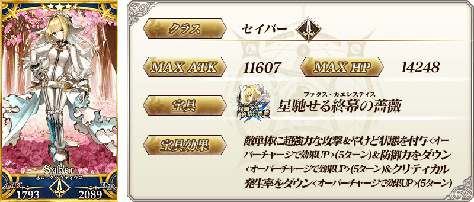
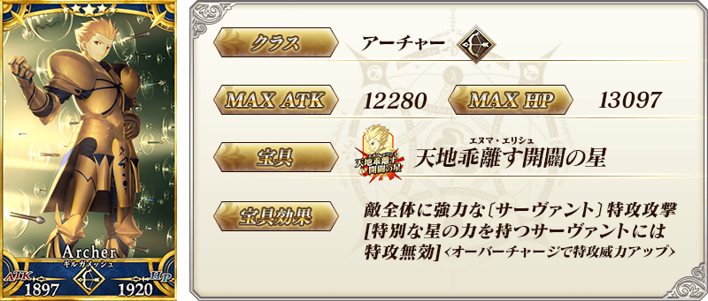
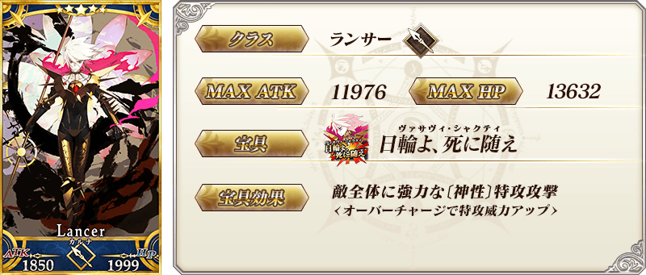
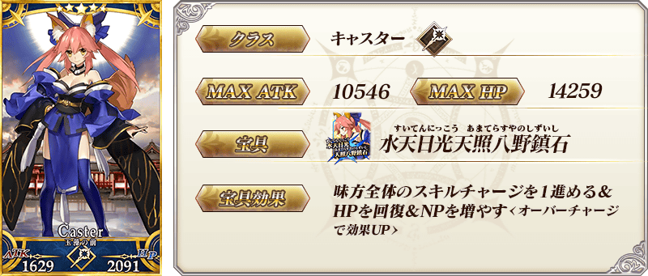
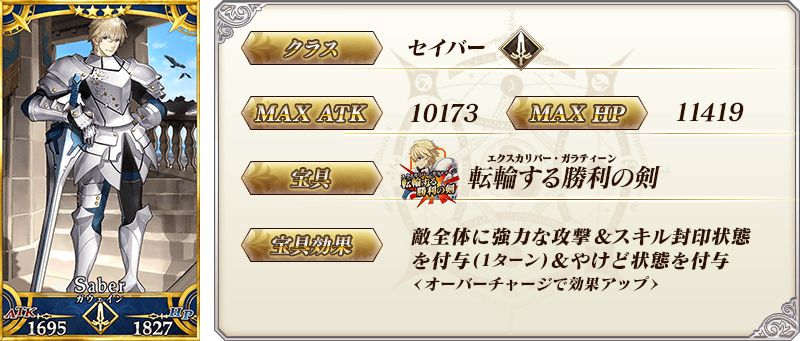

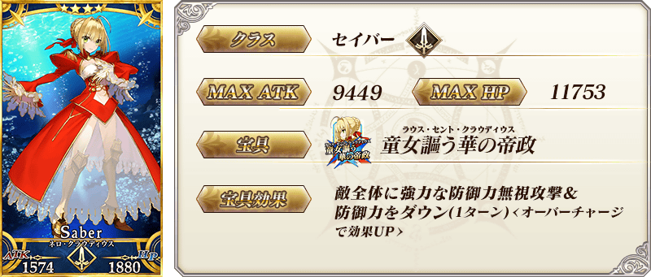


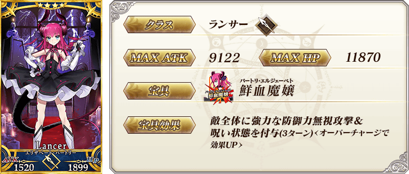
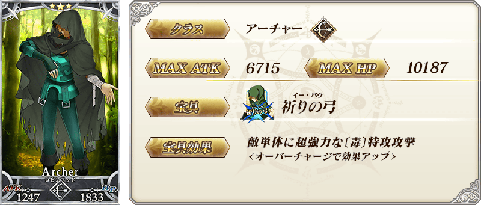
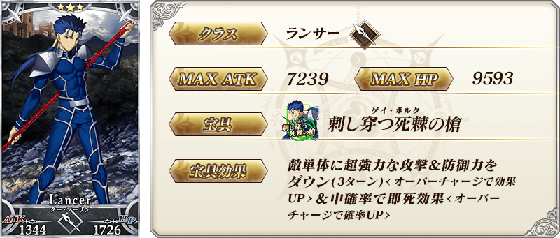
| 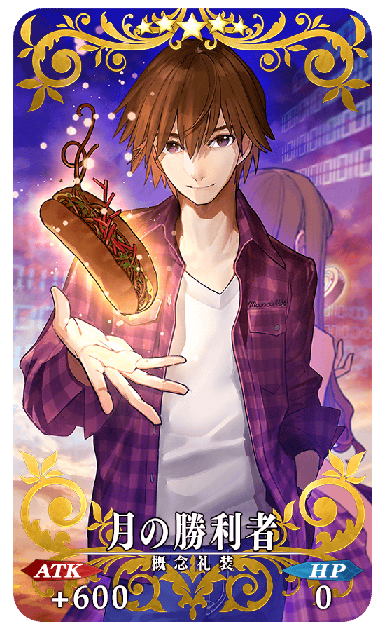 |
★★★★★SSR 月の勝利者 ATK 600(最大:2400) HP 0 技能 自身的Buster卡的性能提升10％＆Critical威力提升20％ |
| 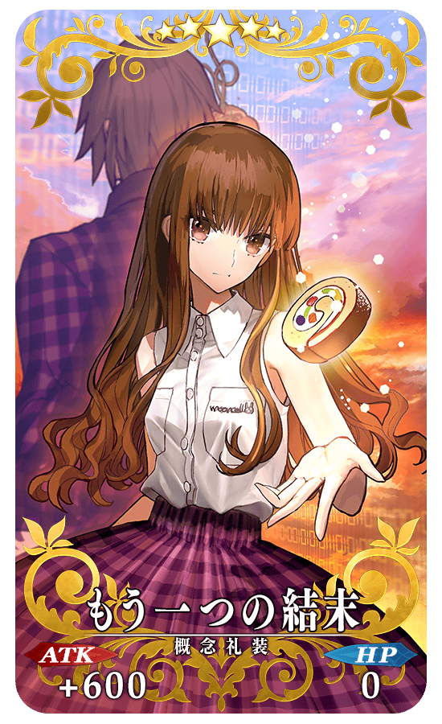 |
★★★★★SSR もう一つの結末 ATK 600(最大:2400) HP 0 技能 自身的Arts卡的性能提升10％＆Critical威力提升20％ |
| 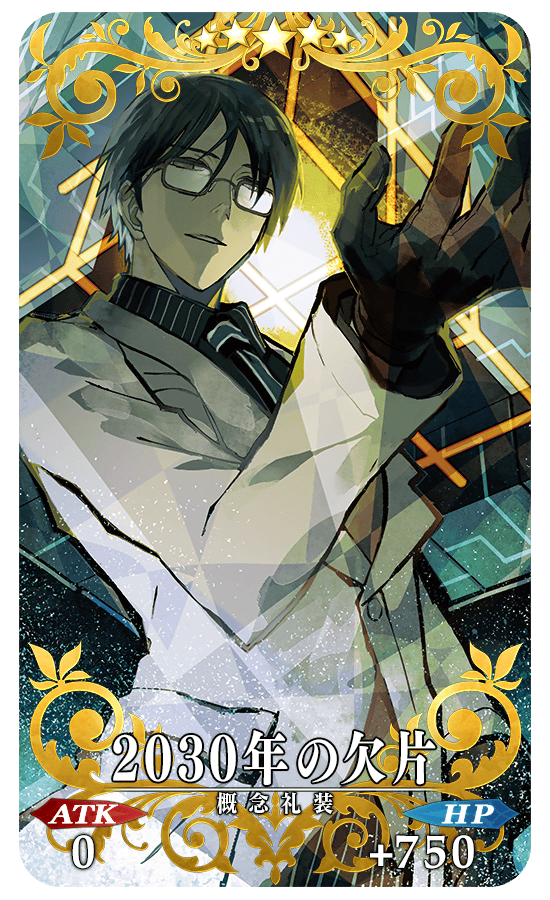 |
★★★★★SSR 2030年の欠片 ATK 0 HP 750(最大:3000) 技能 對自身賦予每回合星星8個獲得狀態 |
| 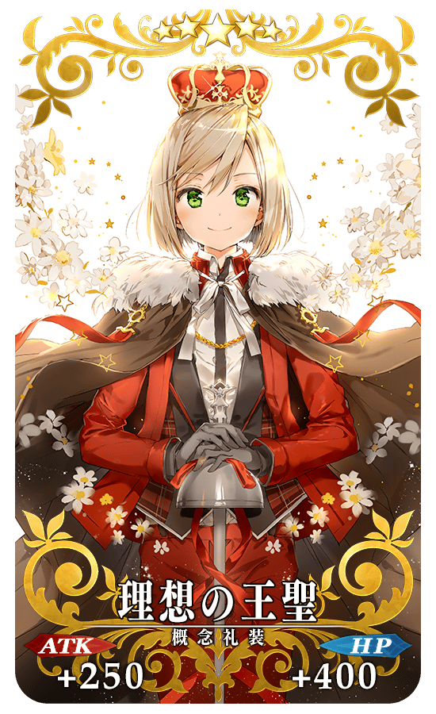 |
★★★★★SSR 理想の王聖 ATK 250(最大:1000) HP 400(最大:1600) 技能 我方全體＜含候補＞的最大提升HP1000 |
| 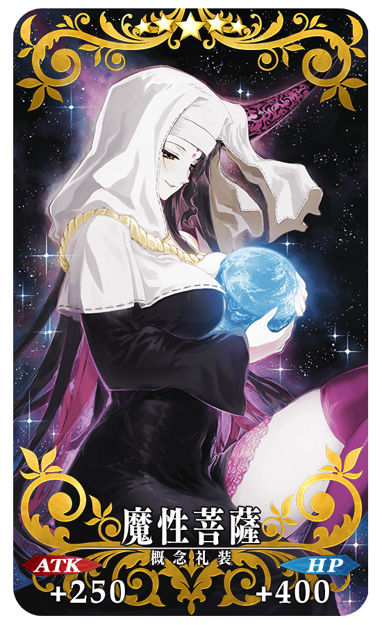 |
★★★★★SSR 魔性菩薩 ATK 250(最大:1000) HP 400(最大:1600) 技能 自身的NP以50％累積狀態開始戰鬥＆寶具使用時的蓄力階段加升2階段(1次) |
|
★★★★SR ルームガーダー ATK 0 HP 600(最大:2250) 技能 自身的星星集中度提升300%＆賦予傷害減免300狀態 |
| 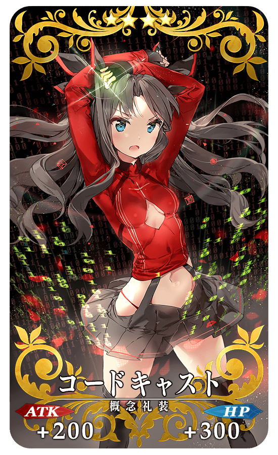 |
★★★★SR コードキャスト ATK 200(最大:750) HP 300(最大:1125) 技能 自身的攻擊力提升25％(3回合)＆防禦力提升25％(3回合) |
| 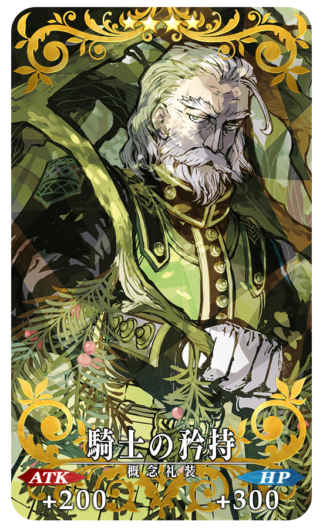 |
★★★★SR 騎士の矜持 ATK 200(最大:750) HP 300(最大:1125) 技能 自身的Critical威力提升40％＆防禦力下降20%【副作用】 |
| 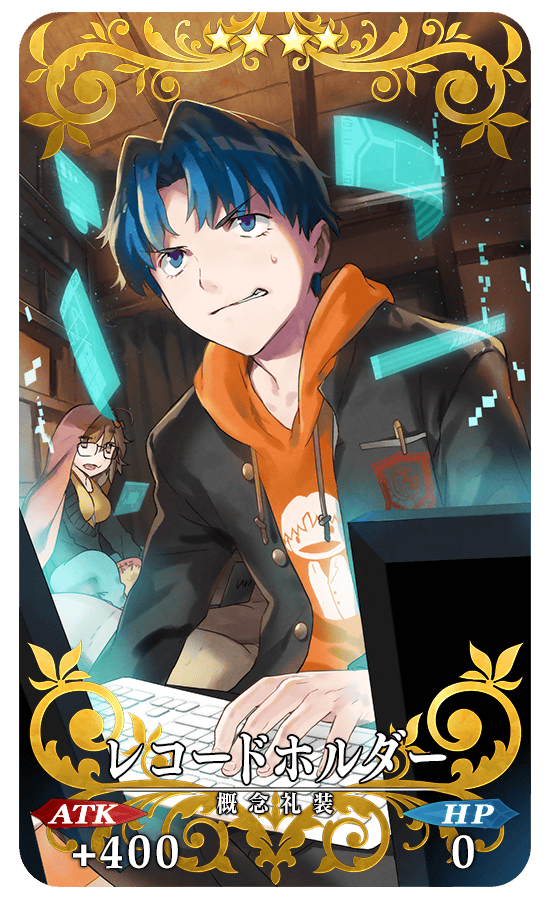 |
★★★★SR レコードホルダー ATK 400(最大:1500) HP 0 技能 自身的弱體賦予成功率提升15% |
|
★★★R ミラクル求道者 ATK 200(最大:1000) HP 0 技能 持有〔神性〕特性的Servant裝備的話寶具威力提升15% |

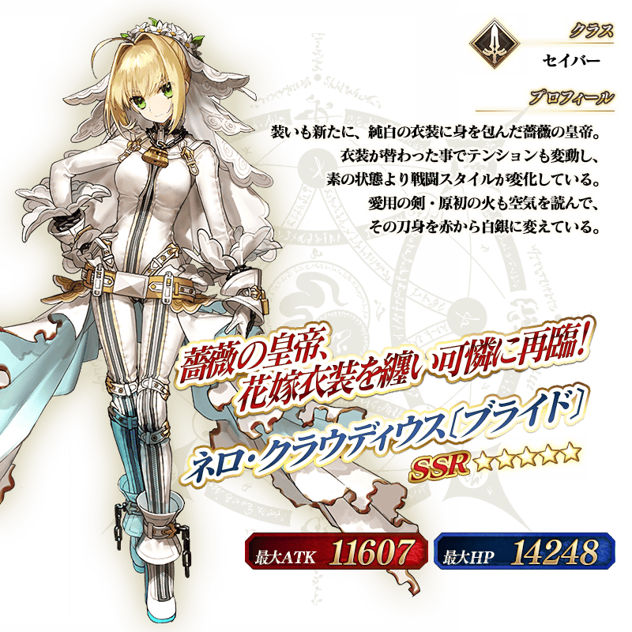
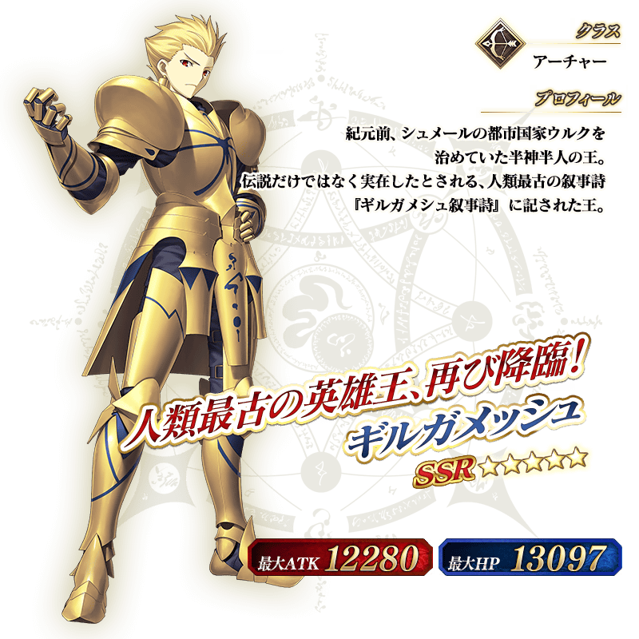

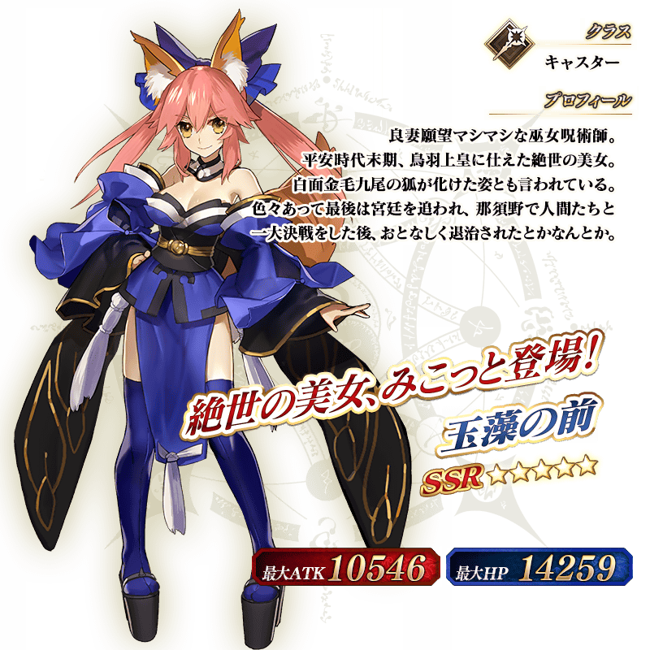